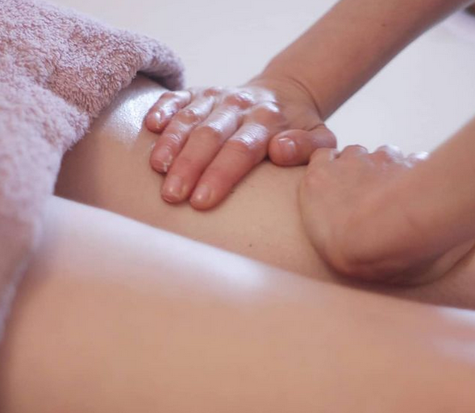
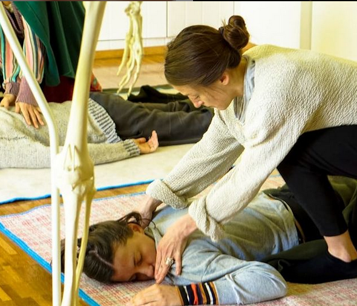
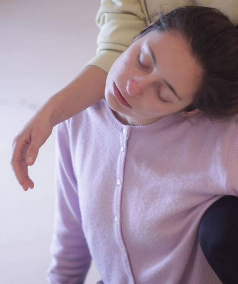

Servicios ofrecidos:
Relajante:
El masaje relajante estimula la circulación sanguínea, ayuda a descontracturar los músculos y descarga la tensión que se acumula en ellos. Este beneficio permite aliviar el dolor que se localiza en la espalda y en la cabeza por causa tensional, además de combatir la rigidez corporal.
Descontracturante:
Se utiliza para identificar la musculatura más tensa y cansada, realizando maniobras, técnicas y presiones para recuperar su función y movilidad normal y disminuyendo el dolor que esta produce. El masaje descontracturante genera alivio en las zonas del cuerpo más tensas o afectadas, siendo estas por lo general el cuello, la espalda y la zona lumbar.
Thai:
El masaje thai tiene una visión holística del ser humano, procede teniendo en cuenta que somos una integración: cuerpo, mente y espíritu. Trabaja sobre energía, meridianos y chacras, lo que en occidente conocemos como fascias, cadenas musculares y diafragmas. Utiliza descargas de peso, movilizaciones y estiramientos pasivos.
Drenaje linfático:
El drenaje linfático es un método de masaje específico destinado a mejorar las funciones del sistema circulatorio linfático por medio de maniobras precisas, proporcionadas y rítmicas. Estas maniobras actúan mejorando la circulación linfática por sus trayectos naturales y favoreciendo la eliminación de sustancias de desecho.